|
 |
教你炒股票9：甄别“早泄”男的数学原则！
(2006-11-22 12:00:00)
（注：选股，海选后的交叉筛选）
设计一个程序，将所有投资对象进行分类，只搞那些能搞的，这是投资的第一原则。在分类中，所应用的程序可以各色各样，但有一点是肯定的，即没有任何一个程序可以使得所选能搞的最终都百分百能被搞得高潮迭起，就像没有任何一个挑选面首的程序使得所选能搞的最终都能百分百被搞得高潮迭起。因为任何操作程序都必然面对“早泄”问题，就像任何关于面首的选择都必然面临“早泄”男的甄别问题。
而甄别“早泄”之所以困难重重，使得无数所谓高手死无葬身之地，是因为“早泄”这事还真得真刀真枪地实干才能发现，这比ED的甄别可复杂多了、风险大多了。ED，不需要深入介入就可趁早发现，但“早泄”不可以，怎么都要试上一试，而这玩意是一锤子的买卖，这次行还不能保证下次就一定行，因此要有效甄别、及早发现而减少损失就成了一个头号难题。许多所谓高手会宣称，出现什么情况，这股票就会长。但实际上，任何一种情况，都有着极高百分比的可能会出现“早泄”，确定能搞的突然就变成不能搞了，使得介入变成了套牢。这种情况，在投资里简直太常见了。
那么，如何甄别“早泄”男？首要的就是严格的资金管理，一旦出现“早泄”现象，必须马上退出，即使下面突然又不“早泄”了，又强力高潮了，也必须这样干。而且“早泄”特敏感，一个偶尔的因素就可能导致，而要重新再来，还要等待一个长的不应期，一个长的调整过后，即使会高潮不断，也浪费了时间，有这时间，可搞的东西多了去了，这世界又不只有一个面首、一只股票。当然，这里说的只是基本原则，如果有一套严格的分批介入和退出程序，这一切都变得简单。资金管理问题，涉及面很广，以后会专门分析介绍，这里说的是另一个方面，就是如何能在投资领域尽量避免碰到“早泄”男。
“早泄”出现的根本原因在于介入程序出现破缺，出现程序所不能概括的异常情况，这对于所有程序都是必然存在的。而一个程序出现异常，也就是出现“早泄”的概率有多大，这是可以通过长期的数据测试来确定的。最简单的就是抛硬币，正面买、背面不买，这样也算一个介入程序，但这样一个程序的“早泄”率，至少是50% 以上。现在的问题其实很简单，就是如何发现一个“早泄”率特别低的介入程序。但答案很不幸，任何一个孤立的程序都不会有太低的“早泄”率，如果一个程序的“早泄”率低于10%，那就是超一流的程序了，按照这个程序，你投资10次，最多失误1次，这样的程序是很厉害的，基本没有。
但问题不像表面所见那么糟，在数学中，有一个乘法原则可以完全解决这个问题。假设三个互相独立的程序的“早泄”率分别为30%、40%、30%，这都是很普通的并不出色的程序。那么由这三个程序组成的程序组，其“早泄”率就是30%*40%*30%=3.6%，也就是说，按这个程序组，干100次，只会出现不到4次的“早泄”，这绝对是一个惊人的结果。即使对于选面首来说，有这样的高效率，大概连武则天大姐都要满意了。
现在，问题的关键变成，如何去寻找这三个互相独立的程序。
首先，技术指标，都单纯涉及价量的输入而来，都不是独立的，只需要选择任意一个技术指标构成一个买卖程序就可以。对于水平高点的人来说，一个带均线和成交量的K线图，比任何技术指标都有意义。
其次，任何一个股票都不是独立的，在整个股票市场中，处在一定的比价关系中，这个比价关系的变动，也可以构成一个买卖系统，这个买卖系统是和市场资金的流向相关的，一切与市场资金相关的系统，都不能与之独立；
最后，可以选择基本面构成一个甄别“早泄”男程序，但这个基本面不是单纯指公司赢利之类的，像本ID在前几期所说，国航李总当兵出身不会让自己的股票长期跌破发行价这么没面子，还有认沽权证基本不会让兑现等等，这才是更重要的基本面，这需要对市场的参与者、对人性有更多的了解才可能精通。
当然，上面这三个独立的程序只是本ID随手而写，任何人都可以设计自己的独立交易程序组，但原则是一致的，就是三个程序组之间必须是互相独立的，像人气指标和资金面其实是一回事情，各种技术指标都是互相相关的等等，如果把三个非独立的程序弄在一起，一点意义都没有。就像有人告诉你，面首的鼻子大就不会“早泄”，另一个告诉你耳朵大不会“早泄”，第三个告诉你胡子多不会“早泄”，如果真按这三样来选人，估计连武则天大姐的奶妈的邻居的奶妈的邻居的奶妈的奶妈的奶妈，都会不满意的。
借地说说如何看本ID的文章，本ID不是股评，不会推荐什么股票，所以希望来本ID这里知道什么具体股票的，就不要浪费时间了。试想，真有本事的人，挣钱都忙不过来，怎么会当股评。本ID这里，股票只是其中一个小项目，只是希望来这里的人也学会怎么挣钱。所谓六艺，不会挣钱，在经济社会里还算人吗？看本ID的文章，要学会方法，当然，本ID有时候可能有意无意就会透露点东西，但你必须有分析能力，要吃透方法。就像10月24日告诉你认购权证介入的一个原则，26日武钢认购权证就大幅启动，2周从3毛多长到1块多，翻了快4倍，如果你真能吃透本ID所说的方法，这种机会是可以把握的。
至于现实的股市，本ID在前面已经反复说了，只要是牛市，股票都要表现的，前几天大家可能都很烦银行股，因为大家都没有，但昨天开始大家就高兴了，因为银行股不动，其他股票开始动。别恨银行股，哪天它们真见顶了，市场也好不了，它们是红旗，各位只要看着红旗还在打，各根据地就可以继续轮动大干了。
股票的运动是有规律的，好好学习，这一切都能在你的把握中。至于说本ID想炫耀自己，这种废话根本不值得反驳。本ID在投资市场曾干过事情牛的程度超过你们所有人的想象，本ID还用向你们炫耀？本ID现在只是把东西抖点出来，活跃一下博客的气氛，没有其他任何想法。
-------------------------------------------------------------------------------------
每日解盘（2006-11-22 14:27:22 ）
缠中说禅：2006-11-22 14:27:22
友情提醒，大盘短线最大的风险是1972到1977的缺口，短线在所有板快都轮动一次后，短线的震荡在所难免。应有一定的心理准备。
每日解盘（2006-11-23 12:09:31 ）
缠中说禅：2006-11-23 12:09:31
昨天本ID在盘中友情提醒要对震荡要有心理准备，大盘经过昨天下午随后的跳水与今早的震荡，越来越接近真正的调整。注意，本ID说的调整只是短线的，好的个股甚至会借调整启动。大盘在进入调整前有极大可能先制造一个多头陷阱，大盘在1923-1925留下突破缺口，1972到1977留下中继缺口，如果是多头陷阱，一旦出现衰竭性缺口，就是警报拉响。
缠中说禅：2006-11-23 13:42:46
再次友情提醒，目前深成指数与沪指已出现背离，这是一个很不好的信号，如果2点以后还不改变，盘中震荡不可避免。而且指数进入调整的可能进一步加大。
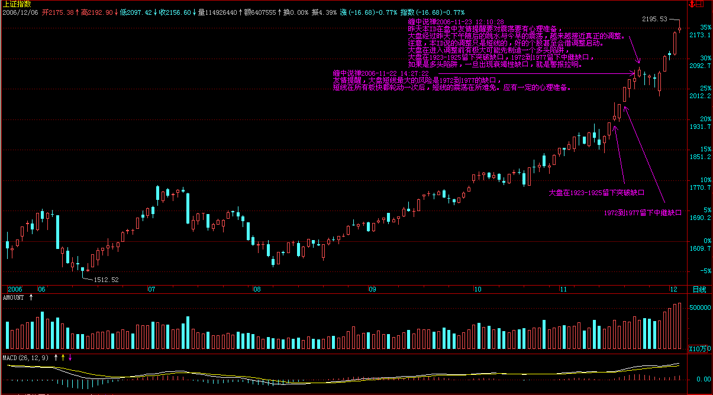
缠中说禅：
2006-11-23 15:11:58
大盘如上友情提示盘中出现大幅震荡，震荡中新板块借机启动，这就是典型的轮动，短线技术好的在其中可以玩得不亦乐乎。但大盘今天终显疲态，两地指数出现背离，成交量也有所萎缩，预示真正的调整迫在眉睫。注意，盘中震荡和调整可不是一回事，即使最短线的调整也至少要去考验5天甚至10天线的。
还是像中午所说的，对调整无须恐惧，技术好的人最喜欢调整了，调整正是寻找下一次上涨好股票的时候，至少可以利用调整换股或打差价，前期没动的股票也会借调整启动的。
----------------------------------------------------------------------------------------------
回复
-------
[匿名] nn
非常欣赏楼主的新思维和大智慧,但有一点不明白,楼主为何说15元多买N中工就是理性?现在我不是想问N中工值不值这个价,我是想知道假如我在那个位置买了,后面的情况大家也知道了,我的问题是在这个长达几个月的过程中应该如何处理才是最佳的操作手法?
=======
开盘就买中工当然是理性的，因为第一只，而且开盘的位置也不太高。后面之所以出现如此走势，是中国特色的管理层所造成的，但开盘15元多买的，后面18、19元随便你出，由于情况发生了意外，当然就要选择退出，这还是上面的原则，买股票一定不能追高，这样一旦发生意外，退出也简单。
(2006-11-22 12:25:08)
-------
[匿名] 朝阳一小猪2006-11-22 12:43:51
强人啊强人，可是程序怎么设计法呢？不能指望我们大家都去学习股票分析程序设计啊，即便能学会，等我们学完了研究完了牛市也结束了，普通人只能一只只股票自己看啊，工作量巨大啊。
好象有种些股票分析软件叫什么飞狐交易师的是可以用户自己设定一些指标值进行选股的的吧？想知道博主是怎么弄的啊，一定要不吝赐教哦！
===================
不是设计程序，是用想好一套系统的方法，不要企求有什么独门暗器。请你在好好读读，慢慢理解，会悟出点东西来的。
(2006-11-22 12:50:05)
-------
[匿名] 飞龙 2006-11-22 12:49:47
楼主应该不缺钱吧，为什么还要花大把时间炒股呢？
===========
炒股不花时间，只有牛市时候才需要看股票，本ID2001年到2005年，4年连一眼股票都不看。现在就算看，一天也就4小时，这不是钱的问题，而是一个智力问题，股票对于本ID来说，就是一个智力游戏，休息的好方法。
(2006-11-22 12:52:53)
-------
友情提醒，大盘短线最大的风险是1972到1977的缺口，短线在所有板快都轮动一次后，短线的震荡在所难免。应有一定的心理准备。
(2006-11-22 14:27:22)
-------
[匿名] 妖女的文章写的2006-11-22 14:16:39
有点狂，但是回复网友的问题态度还是不错的。我也有几个问题想请教：
对于你选股票的所谓的3个可以相乘起来的条件还有点不是很明白。第二点所谓的市场的比价系统，买卖系统不太明白，能不能说的更清楚点？是不是指市场当下的热点。比如前一阶段的炒银行股，大盘股，然后现在的炒二线蓝筹和非蓝筹，是不是这个意思？你说的第三个条件比较简单，但是作为我们一般的投资者又如何知道！散户的消息面太差了！
=======
你的问题晚上回答，3点后有一个谈判，必须走了。再见。
(2006-11-22 14:35:16)
-------
[匿名] 中银国际2006-11-22 14:41:36
哎呀，现在真的跳水啦，从最高位已经跳了30点啦，楼主真神人呀。
============
震荡就是折腾，利用折腾，技术高的就可以玩轮动的游戏。大盘震荡，股票可不一定震荡，创新高的股票仍不会少。
(2006-11-22 16:50:33)
------
[匿名] 妖女的文章写的2006-11-22 14:16:39
对于你选股票的所谓的3个可以相乘起来的条件还有点不是很明白。
=================
复习一下初中的概率
第二点所谓的市场的比价系统，买卖系统不太明白，能不能说的更清楚点？是不是指市场当下的热点。比如前一阶段的炒银行股，大盘股，然后现在的炒二线蓝筹和非蓝筹，是不是这个意思？
===============
不是，市场个股之间有比价关系，这是市场的整体结构，要把握这点，必须对市场的总体结构有所把握。比价关系的变动是最重要的，这点以后会说到。
-------------
你说的第三个条件比较简单，但是作为我们一般的投资者又如何知道！散户的消息面太差了！
=======
很多消息根本就不是什么秘密，关键你要有心。不是要你瞎听消息，而是要好好分析消息。是你在使消息，而不要被消息使。
(2006-11-22 17:02:16)
-------
[匿名] 飞龙2006-11-22 16:15:58
我炒股已有N年了，运气好赚了几百万，但总觉得不能一辈子炒股啊。现想办实业，不知做什么；给别人打工，也不可能；写写博克，又没有楼主的才情。受共产党教育多年，没有什么信仰，钱越多人越空虚，痛苦啊！请楼主指点迷津，多谢！
==================
先把房子、车子买好，把几十年生活费用、养孩子的费用等等留出来买国债，还有一些基本的保险。
把上面所有问题都处理好了，如果还有闲钱，就继续炒股票。
有空来本博客看看《论语》，看看“缠中说禅”。人生不悟道，才是真正的白活。炒股票也是可以悟道的，边炒边悟吧。
实业就不要干了，炒股票的人干实业，基本很难成功。干实业太累，风险比股票大多了。股票的风险，一个人就可以控制，实业的风险，谁都控制不了。
(2006-11-22 17:10:13)
-------
[匿名] Jim
2006-11-22 16:37:35
现在证券分析软件越来越高级，都有荐股功能吧？多下载几个不同公司设计的证券分析软件，分析某个股票时，如果10个有7个建议买进，就买进，反之亦然。
=============
这样和只有一个系统没什么区别，所有分析软件的原理都是一样的，等于一回事。
(2006-11-22 17:11:12)
-------
看了四小时的盘，谈了一小时的判，本ID要去找好吃的了。再见。
(2006-11-22 17:12:06)
-------
[匿名] 倒霉呀！
2006-11-22 16:29:52
从上周偶尔发现了这里，就再也止不住每天要来看看了。。呵呵。。真的很佩服很佩服楼主呀！
今年股市大牛，于是N年没有炒股的我一激动在5月份有色金属股涨到不能再涨的时候义无反顾介入了，结果在大家都说随便都能挣钱的大好时机，我竟然赔了40%，现在虽然大势趋好，但是我依然深套其中，呵呵。。
看了楼主的文章，感觉自己没有炒股的脑子呀！
===================
临走还看到你的帖子，随手也回答了。当一个教训，以后一定不要追高介入任何股票，一定要在调整结束后将启动时介入，这是在市场中生存的最好办法。
(2006-11-22 17:14:32)
-------
[匿名] 射男哥哥2006-11-22 17:57:29
检点数女股票高论:做股票就象做爱;选股票就象选面首.早出如男人早泻;高点如女人高潮.疲软股票如ED男人,调整期如男人不应期,大牛市不用安全套......古今中外,闻所未闻!尽管数女没养过孩子(26岁亿元资产女博士),如日后真有了一男半女,上面如此文字怎么让儿女过目呢?想一想哥哥我都后背发凉!人无远虑，必有近忧。人没有深远的审察、思虑、谋划，必然缠附祸患。
========
本ID叫缠中说禅，孩子是不会知道缠中说禅是谁的，等孩子知道时，估计新浪都倒闭了。
(2006-11-22 18:28:54)
-------
本ID不看通常所看的基本面，只看本ID认为是基本面的基本面，例如国航的李总是当兵出身的。
(2006-11-23 11:56:22)
-------
昨天本ID在盘中友情提醒要对震荡要有心理准备，大盘经过昨天下午随后的跳水与今早的震荡，越来越接近真正的调整。
注意，本ID说的调整只是短线的，好的个股甚至会借调整启动。
大盘在进入调整前有极大可能先制造一个多头陷阱，大盘在1923-1925留下突破缺口，1972到1977留下中继缺口，如果是多头陷阱，一旦出现衰竭性缺口，就是警报拉响。
(2006-11-23 12:10:28)
-------
[匿名] 信禅人
2006-11-23 12:42:09
说得有水平,很有心.以后会经常到此走走.想请教:股市还能走多远?资源类的股票还能进吗?如原水(600649)
============
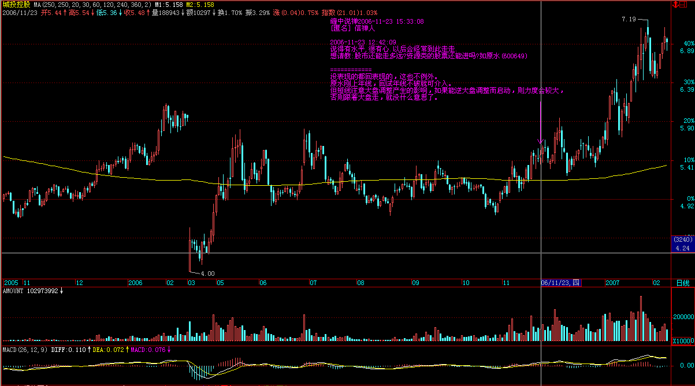
没表现的都回表现的，这也不例外。原水刚上年线，回试年线不破就可介入。但短线注意大盘调整产生的影响，如果能逆大盘调整而启动，则力度会较大，否则跟着大盘走，就没什么意思了。
(2006-11-23 15:33:08)
-------
[匿名] 一声叹息2006-11-23 13:15:39
已经介入600267，600868。
请博主鉴定，谢谢！
============(卖买)
前者未上年线，以后最好不要介入这类股票。但既然介入了，就持有吧，反正没启动的最终都会启动，会轮到它的。后者在年线整理，耐心等待整理完成吧。
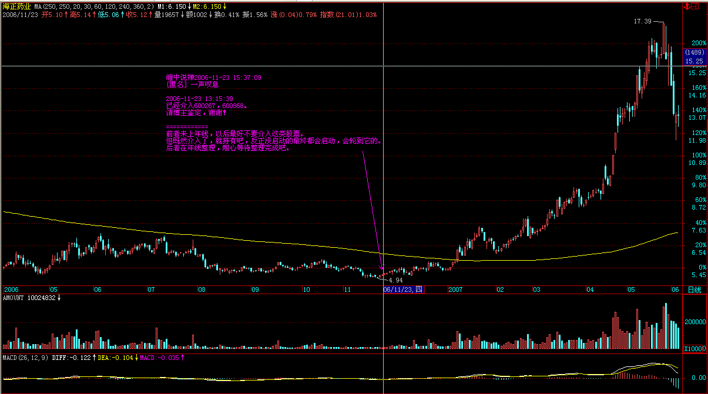
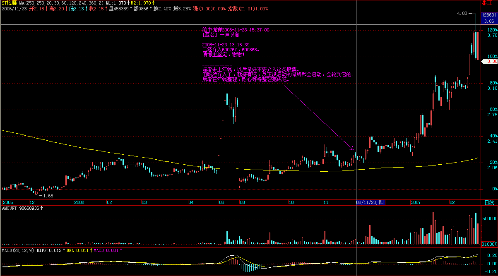+
=====《论语》详解：给所有曲解孔子的人（34） 486e105c0100079s=====
昨天本ID在盘中友情提醒要对震荡要有心理准备，大盘经过昨天下午随后的跳水与今早的震荡，越来越接近真正的调整。
注意，本ID说的调整只是短线的，好的个股甚至会借调整启动。
大盘在进入调整前有极大可能先制造一个多头陷阱，大盘在1923-1925留下突破缺口，1972到1977留下中继缺口，如果是多头陷阱，一旦出现衰竭性缺口，就是警报拉响。
(2006-11-23 12:09:31)
-------
心禅2006-11-23 11:39:07
与你有缘，博客的名字里都有一个“禅”字，可却大相径庭。对你的“股禅”佩服不已！我买股票总是“买了跌卖了涨！”你的文章好，可我看得云里雾里，问一个简单问题，请别笑，哪根是年线和半年线？怎样看啊？我现在能进“北辰”（601588）吗？东方金钰（600086）何时能涨？
非常真诚地请教“教主”！
=============
那股票庄家控盘太厉害，如果介入成本太高，要忍受一定的风险，中线关键看本ID上次说的70月线，如果真突破了，就有继续的大行情。
“北辰”中线肯定没到位，但本ID不喜欢追高的，也不建议任何人追高买入。
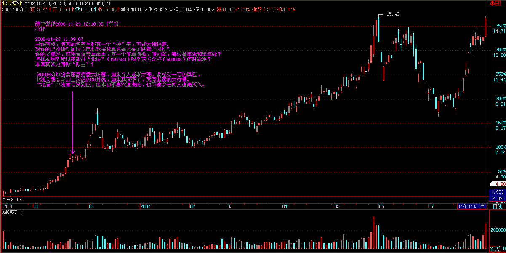
(2006-11-23 12:18:35)
-------
[匿名] 捣蛋2006-11-23 12:11:44
600653能不能介入呢？
============
(卖买)这个位置比较尴尬，中线没问题，短线要小心找好介入的时机。
随便告诉你一个奥秘，介入股票最好在均线粘合时，例如这股票，11月13日就是最好的短线介入时期，而现在等于要赌第二波，比原来的位置差多了。
关于如何介入的一些小窍门，以后会陆续写的，请关注。
(2006-11-23 12:25:38)
-------
好养的鱼2006-11-23 00:09:27
缠中说禅,你好.
我于4.31附近介入600992,请问最近会有大涨机会吗?
该股由于资金占用的问题有一定基本面上压力，但盘面上有庄家在搞，中线关键先站稳4.6元的年线才会有大幅启动的机会。该股由于资金占用的问题有一定基本面上压力，但盘面上有庄家在搞，中线关键先站稳4.6元的年线才会有大幅启动的机会。
缠中说禅 于2006/11/23 12:13:02 回复到:
该股由于资金占用的问题有一定基本面上压力，但盘面上有庄家在搞，中线关键先站稳4.6元的年线才会有大幅启动的机会。
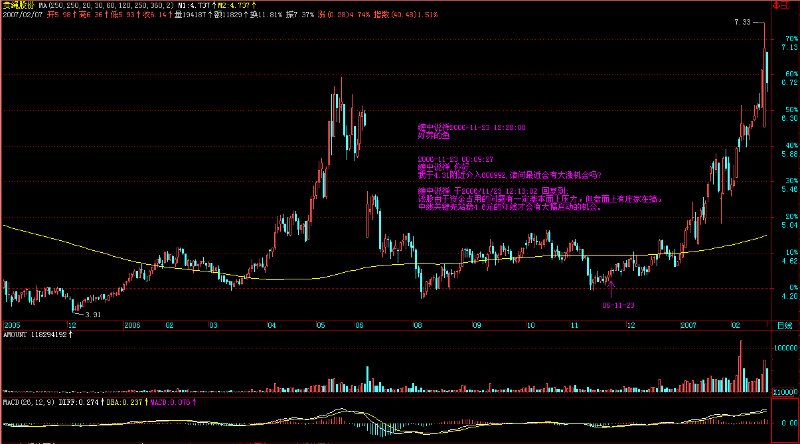
(2006-11-23 12:28:00)
-------
[匿名] 捣蛋2006-11-23 12:11:44
600653能不能介入呢？我几个月前买的600653，正打算出手了呢。
===============
(卖买)中线就不存在出手的问题，短线已经错过出手的好时机，你没看本ID写的如何教你炒股票，放巨量后就是一个好的短线出手时机，你看它在11月17日是不是特别符合这个？

(2006-11-23 12:32:23)
------
[匿名] 诚心请教2006-11-23 12:29:41
楼主６００３２０应怎样操作呢？谢谢了！
============
中线问题不大，短线昨天是一个打短差的好时机，因为第一次冲击年线。错过就算了。
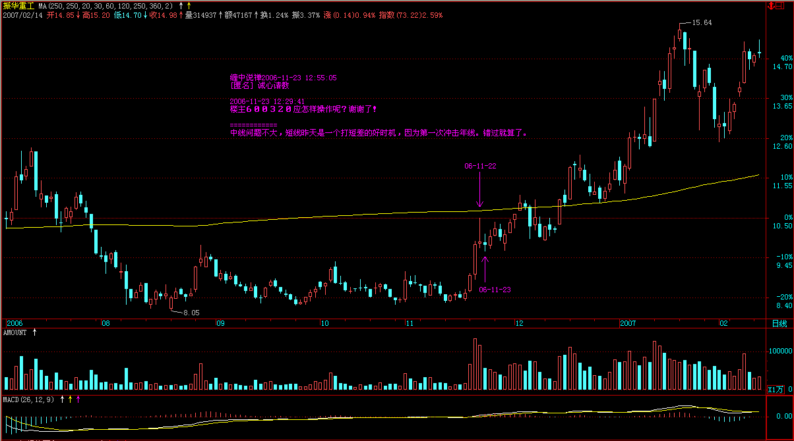
(2006-11-23 12:55:05)
-------
[匿名] 快2006-11-23 12:40:15
600596和600143如何看待呢
=======
后面这太庄股了，介入就免了，有就拿着。前面那还可以，但不是好的介入时机，拿着没问题。
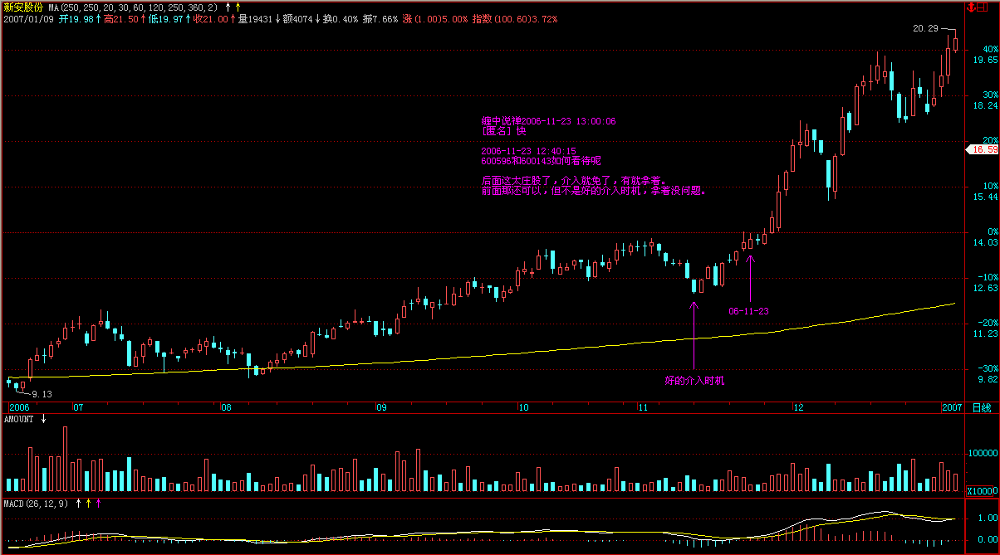
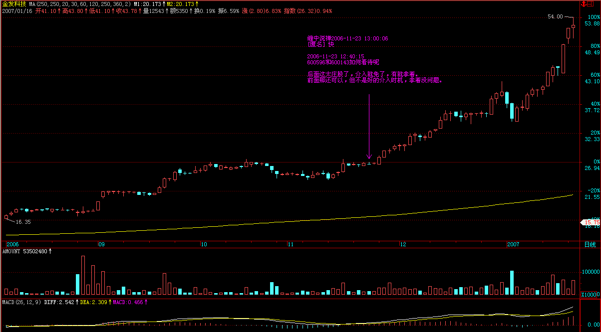
(2006-11-23 13:00:06)
-------
再次友情提醒，目前深成指数与沪指已出现背离，这是一个很不好的信号，如果2点以后还不改变，盘中震荡不可避免。而且指数进入调整的可能进一步加大。
(2006-11-23 13:42:46)
-------
大盘如上友情提示盘中出现大幅震荡，震荡中新板块借机启动，这就是典型的轮动，短线技术好的在其中可以玩得不亦乐乎。
但大盘今天终显疲态，两地指数出现背离，成交量也有所萎缩，预示真正的调整迫在眉睫。注意，盘中震荡和调整可不是一回事，即使最短线的调整也至少要去考验5天甚至10天线的。
还是像中午所说的，对调整无须恐惧，技术好的人最喜欢调整了，调整正是寻找下一次上涨好股票的时候，至少可以利用调整换股或打差价，前期没动的股票也会借调整启动的。
(2006-11-23 15:11:58)
-------
[匿名] 幸运星2006-11-23 14:53:55
非常佩服楼主的才气和能力！想请教楼主一个问题：
象我这样一个公司小职员，厌倦了朝九晚六的生活，如果下辈子想靠股市谋生，楼主觉得这种想法可行不？我没有投资经验，周围也没有懂行的朋友，学习途径也主要是网络。
================
在公司里也可以炒股票，这和上班是没什么矛盾的。等你积累了一定财富后才专门炒股票，先把技术学好。股票不是赌博，连赌博都有技术，别说股票了。
(2006-11-23 15:20:00)
-------
[匿名] 青皮六
2006-11-23 15:05:54
女禅师,趁你心情好,请教一下,000922股改前还有机会吗,为了等股改,俺已被数次抄了后路
=============
不要一条路走到黑，等股改这种游戏，N个月以前玩的，现在已经不玩这个了。既然都等了这么久，就继续吧，以后千万别这样了。要紧跟形势。
(2006-11-23 15:23:12)
-------
[匿名] 最爱诚信
2006-11-23 15:31:19
楼主：真的很仰慕你哦！
我拿路桥建设600263都大半个月了，来回折腾，刚够手续费！请问后市该如何走呀！中交股份上市对此有何影响！感觉走势随城建在走？？？谢 谢！
=========================
要养成尽量不玩第二波的习惯。该股票是一波大长势后的整理，这种整理最烦人了，骗线又多。该股中线没问题，短线要耐心了。压力在250周线，目前在7.72，能突破站稳，则第二波行情展开，否则还是箱型整理。
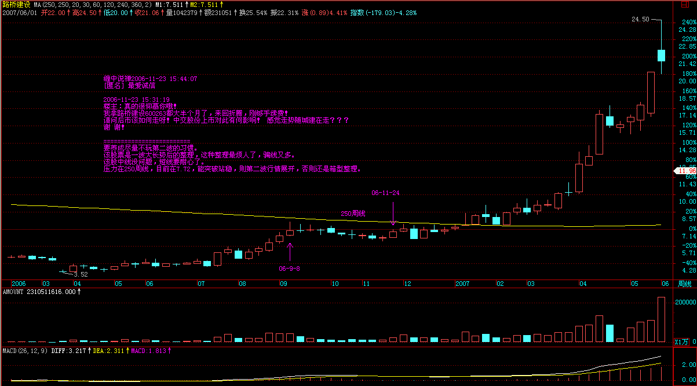
(2006-11-23 15:44:07)
-------
[匿名] 一声叹息2006-11-23 13:15:39
已经介入600267，600868。
请博主鉴定，谢谢！
============
前者未上年线，以后最好不要介入这类股票。但既然介入了，就持有吧，反正没启动的最终都会启动，会轮到它的。后者在年线整理，耐心等待整理完成吧。
(2006-11-23 15:45:51)
-------
[匿名] 谗2006-11-23 14:01:45
请教000100TCL高位被套,成本价5.6,后期如何操作.多谢了!
=============
这成本，估计是抄底抄出来的。首先要严重吸取教训，特别散户，绝对不要抄底，一定要等股票走稳将启动才介入。
目前该股正在磨年线，一旦站稳回有一波行情。但你那成本也太高了，能否到你的成本还真不好说。如果有可能，趁调整时补点仓，能把成本调整到3元附近，那解套甚至挣个百分之几十的机会，还是很大的。
如果你短线技术好一点的，可以不用那么死板，补三分之一到一半的仓，根据短线指标弄短差把成本降下来。你现在的问题是成本太高了，以后千万别去炒底，千万记住。
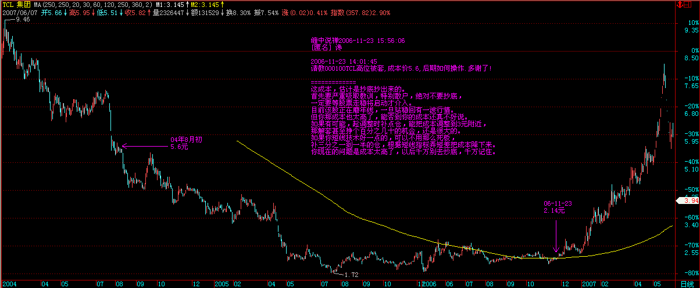
(2006-11-23 15:56:06)
-------
[匿名] 弃暗投明
2006-11-23 13:56:47
老师好,现在才发现这么好的去处,希望还不晚,请问,现在600036还可介入吗,有人建议8元以下再介入,您看会调整这么多吗
还有,您怎么看煤炭股,如600971等,会成为下波热点吗
==============
你说招行？短线根本不可能。中线可能性也几乎没有，长线，几年以后的事情就不说了。
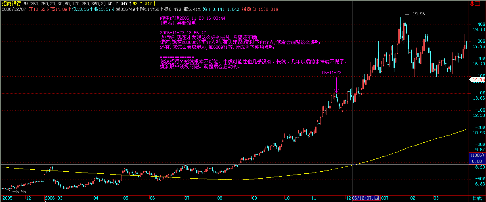
煤炭股中线没问题。调整后会启动的。
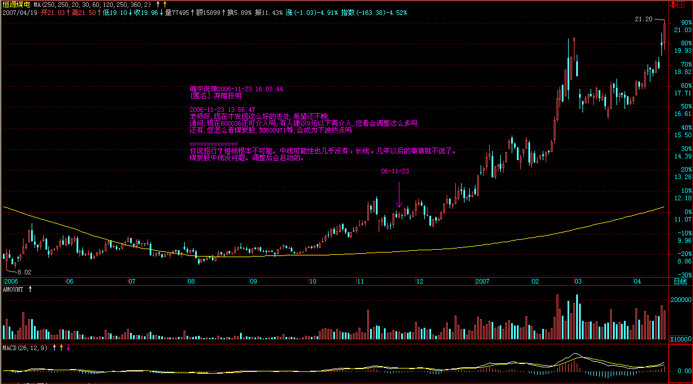
(2006-11-23 16:03:44)
-------
[匿名] 等你回复
2006-11-23 16:00:51
现在很多股票涨高了不敢进,低的又怕继续跌,请楼主谈谈下一阶段选股的方法,好吗
希望楼主能专门出一篇操作股票技巧的文章,主要是怕漏过你在回复中谈到的,多谢了.
===========
可以。
(2006-11-23 16:04:45)
-------
针眼麦芒
2006-11-23 16:07:58
呵呵,楼主这里真是好地方.就《论语》之前看过南老先生别裁甚是喜欢，今见楼主祥解同样精彩.受益菲浅,先谢过。愿楼主在儒学世界更上一层。
PS：
现有600795冲击年线入,未果.短线还能持否.呵呵，看过你的经济学。自觉惭愧，从零开始.望楼主不吝赐教
===============
本ID所解和南可天地悬隔，不是一回事情。
如果是短线，第一、二次冲击年线都是最好的短差机会。这股票的下方支持在5.67\5.72的缺口位置。只要不破，中线就没问题，如果是希望中线持有的，就耐心等待年线和半年线的突破。
关键是你希望短线还是中线，这和你的资金量和持有量有关。
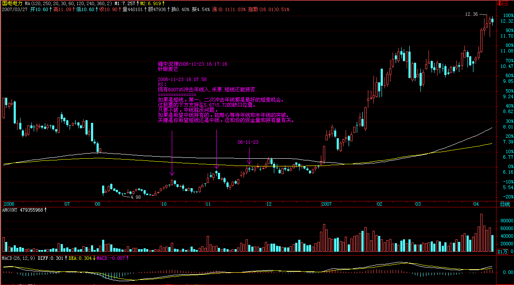
(2006-11-23 16:17:16)
-------
风月
2006-11-23 16:06:30
本人对数学妹妹的佩服是相当的那个啊！我敢大胆的说一句：哪位男人真成了妹妹的面首，那是那个男的荣幸啊！
妹妹帮我看看600401，这个股，快涨了吧！3天再不涨，我就换！
============
你的介入时机不对。如果是短线，一定要在均线粘合时介入，这样就不用浪费时间。当然，既然已经介入了，就好好看着，不过要承受一定的短线风险。
(2006-11-23 16:19:40)
-------
[匿名] 海子
2006-11-23 18:46:33
今天第一天看LZ的文章,觉得很特别,受益不浅.
请教: 600426,600535,600219中线,LZ以为趋势如何?600497长线,LZ对此股的评价如何?由于没有时间,不太喜欢经常进出.在此先谢了.
==================
600535 前期18元不能有效突破的话，小心是中期调整的B浪反弹，中线支持看年线。
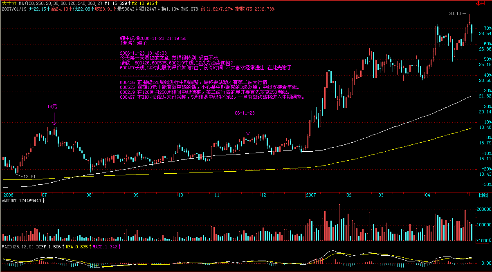
600219 在120周与250周线间中线调整，第二波行情的展开要首先攻克250周线。
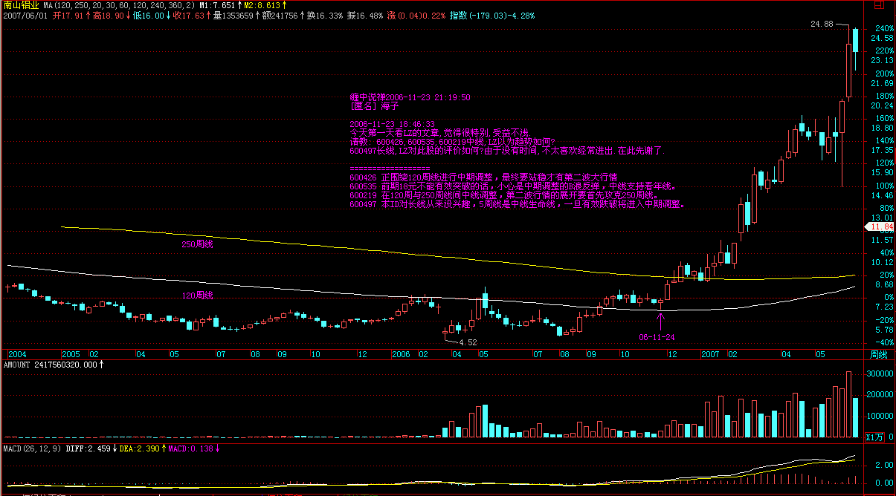
600426正围绕120周线进行中期调整，最终要站稳才有第二波大行情
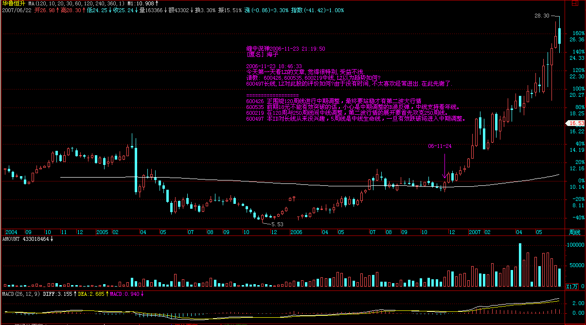
600497 本ID对长线从来没兴趣，5周线是中线生命线，一旦有效跌破将进入中期调整。
(2006-11-23 21:19:50)
-------
[匿名] 酸辣粉
多个嘴，这个技巧没有一定的功力不要乱用，给你举个例子，600685在9.19-9.27这个时间,600220在9.14-9.21这个时间,你把它们的K线调出来看,你能看出任何差别吗,都是均线粘合,可后面的方向是截然相反的,事后看都明白,可人处在当中时,一般都认为肯定是向上的,其实却不然,向这样的例子很多,所以说技巧不能乱用,一定要全面看,就象楼主昨天所说的程序组合,就是多方位考察个股的意思
===============
还是有区别的，后者是三角形整理的最后骗线，而前者不存在这个问题。
另外，本ID重来不赞成搞那些第一波走势太强，其后调整时间又太长的股票，这种股票充满骗线。
(2006-11-23 21:24:02)
-------
[匿名] 想飞2006-11-23 20:05:39
楼主,请问,600188符合均线纠缠介入点吗,
很想象你一样在股市中赚钱,想学习,又不知如何入手,真的很迷茫,望楼主不厌其烦多讲讲
============
先站稳年线再说吧。
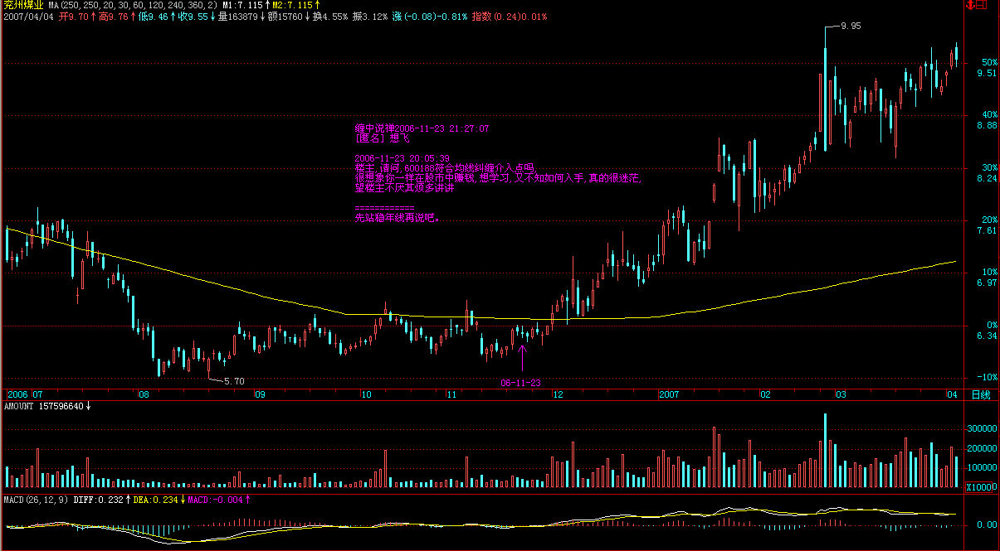
(2006-11-23 21:27:07)
-------
[匿名] 缠绵不觉2006-11-23 19:30:47
呵呵,请教缠女600581,短线能走到哪啊?
=============
短线刚好受制于4元的120周线，只有有效突破，上升空间才能彻底打开。
(2006-11-23 21:29:02)
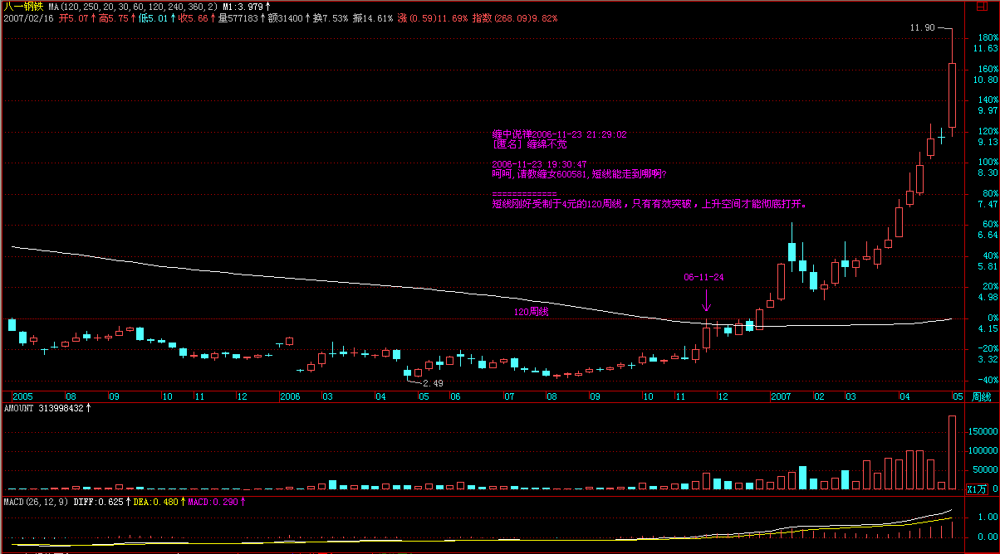
-------
[匿名] 炼铁设备2006-11-23 21:29:06
数女；
１．牛市到目前为止是否已接近了尾声？
============
这问题不早说过了吗？现在是牛市的第一阶段。
======
２．何谓长线，短线，年线，粘合线，大盘？我不懂股票，别笑我．我正在补股票课，为股指作准备，不知在那里能长期与你联系？
=======
联系就在这里吧，至于那几个问题，以后都会说到的。
(2006-11-23 21:35:23)
-------
[匿名] tryrtytry2006-11-23 20:27:06
股市，恶之，必察焉；股市，好之，必察焉。
============
道不远人。
(2006-11-23 21:36:23)
-------
[匿名] 无花果2006-11-23 21:31:47
楼主,想问600050有多大的潜力?请给解答,谢谢.
==============
不要习惯问有多大潜力这种问题，就像问跌到多少才是底一样，都是些害人的想法产生的问题。你只要需要知道中线行情正在展开，持有一直等待行情结束的信号产生。
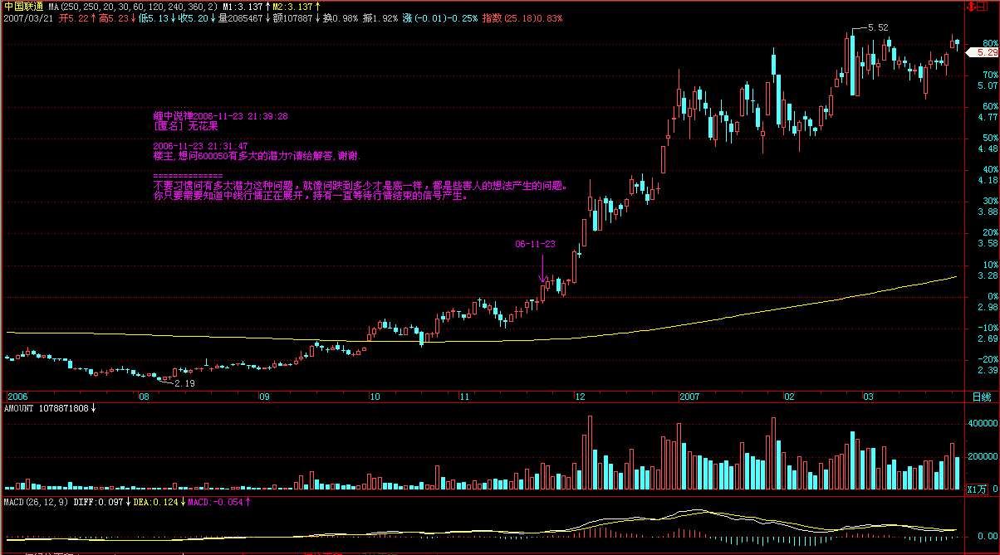
(2006-11-23 21:39:28)
-------
[匿名] 感谢并请教楼主
==============
600663是典型的在年线上盘整，然后所有均线粘合后产生中线行情的例子。各位可以好好研究该日线图形去体会。
这种股票有就拿着，中线介入最好机会已经过去，短线最好机会，也就是最强势走势中跳空缺口后回试5日线的最佳短线介入机会已过，所以中短线都不是好的介入时机，就算了吧。
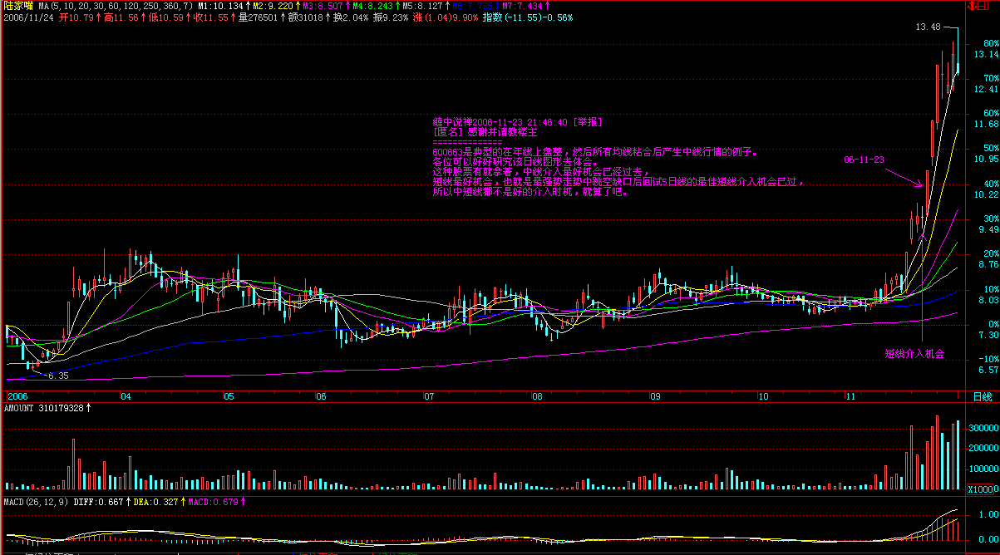
-------
[匿名] 酸辣粉
另外请教一下博主,如何看待这几天沪市的量能,如果量价结合来看觉得是很正常健康的,可是从每天盘口来看到觉得放量滞涨的感觉,不知博主怎么看,另外大盘调整是肯定的了,但不可出现6.7/7.13那样的大阴线,否则这个地方就是顶了,博主怎么看
==============
首先不用考虑顶的问题，除非你觉得短线的顶也是顶。其次，中线的顶不是一天炼成的，只有筑顶一定时间后才会出现那种类型的大阴线。而上升途中的大阴线，只会引发多头更凶猛的反扑。
(2006-11-23 21:51:08)
-------
缠中说禅：你好楼主！我在2.91介入600877中国嘉陵和4.6介入青海明胶。希望楼主帮我分析我该如何运作尽量减少亏损！！！万分感谢！！！！
================
临走才看到你的问题，本ID对套牢者的问题总要优先回答。
首先请一定要记住，不要在以巨量大阴线构造顶部的下跌反抽中介入，这是投资就大忌。
你的青海明胶大概就是这样买的。等吧，中线应该有解套机会的，这个教训一定要吸取。
你的中国嘉陵大概是追高买入的，这又是一个教训，也是等吧，中线应该有解套机会的，这个教训千万要吸取，一定不要追高买股票，一定要有这样的心态，它爱长多少是多少，权当这股票不存在。
600877中国嘉陵：
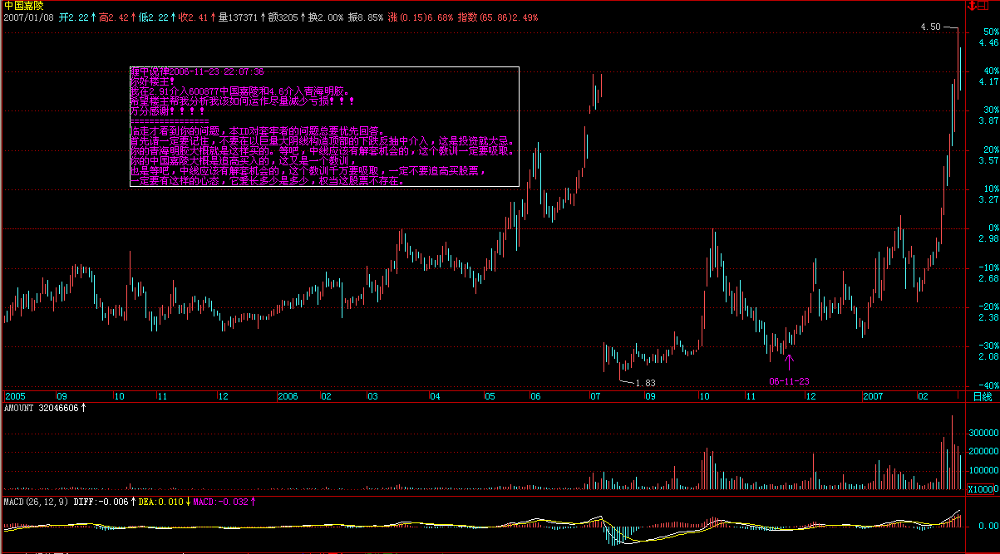
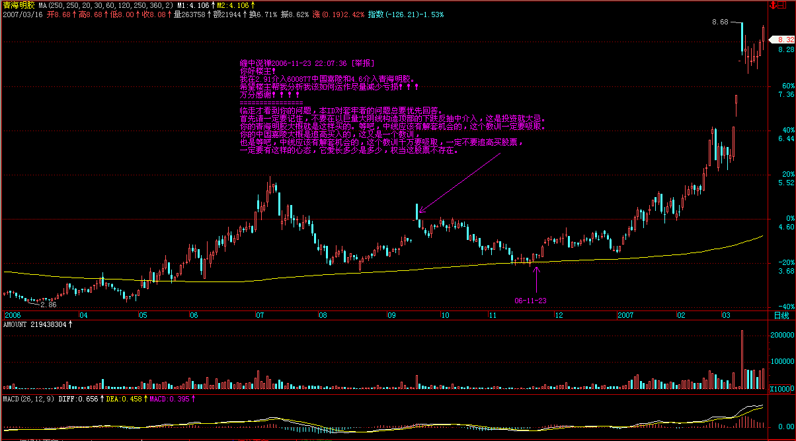
缠中说禅：
、匿名] 奇淫合欢散 2006-11-23 21:59:56
向LZ敬礼！！
请教000752目前能够介入？另外烦请LZ看看002035的周K线，很有趣，错落有秩，似乎很适合做波段。
===============
所有股票都适合波段，不要对有规律的走势产生定式，人经常就是这样被杀的。000752中线分皮介入风险不大，但可能需要耐心。
000752西藏发展：
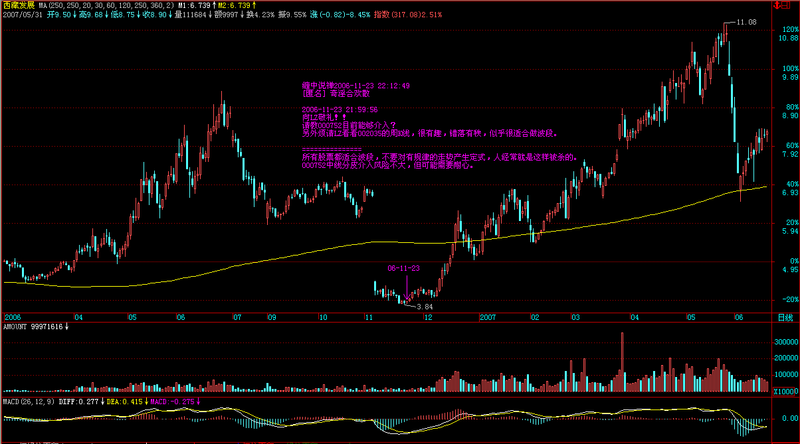
|
|
|